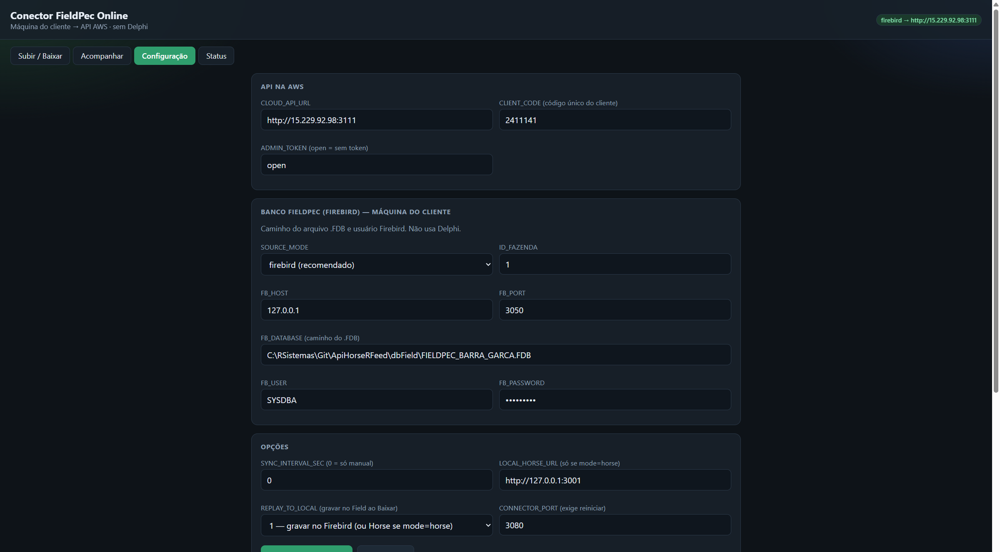
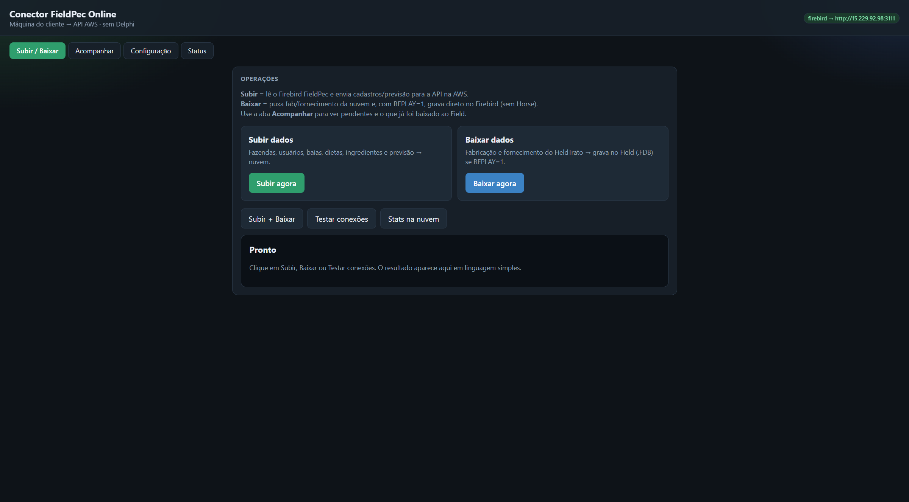
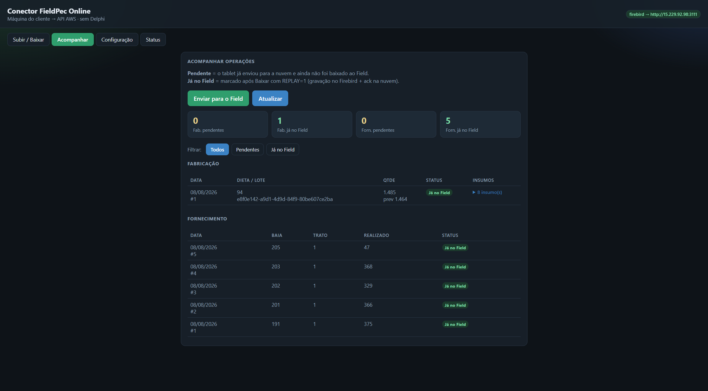

Guia passo a passo para instalar o conector na máquina do escritório, ligar o banco FieldPec (Firebird) à nuvem e subir / baixar os dados usados pelo app FieldTrato.
O conector roda no PC do cliente (onde está o Firebird do FieldPec). Ele fala com a API na nuvem (AWS). O tablet FieldTrato usa a mesma API — sem precisar do Delphi Horse no escritório.
| Aba | Para que serve |
|---|---|
| Subir / Baixar | Enviar cadastros/previsão à nuvem e puxar fabricação/fornecimento do tablet para o Field. |
| Acompanhar | Ver o que está pendente na nuvem e o que já foi gravado no Field. |
| Configuração | URL da API, código do cliente, caminho do .FDB e opções de gravação. |
| Status | Último resultado da sincronização nesta sessão. |
Prefira o instalador FieldPec-Conector-Setup-….exe.
Execute como Administrador.
Arquivo enviado pela RS Sistemas, por exemplo
FieldPec-Conector-Setup-1.0.0.exe.
Clique com o botão direito → Executar como administrador.
Aceite a instalação em C:\FieldPecConnector.
O setup instala Node.js se necessário, registra o serviço Windows
FieldPecOnlineConnector e inicia o painel no navegador.
Endereço: http://127.0.0.1:3080
(também disponível pelo Menu Iniciar).
INSTALAR.cmd →
Executar como administrador. O resultado é o mesmo serviço + painel.
.FDB no caminho correto).
Em muitos ambientes é necessário o cliente Firebird (fbclient.dll).
Vá na aba Configuração, preencha os campos abaixo e clique em Salvar. Os valores exatos (URL, código do cliente e caminho do .FDB) são fornecidos pela RS Sistemas / TI da fazenda.

| Campo | O que preencher |
|---|---|
| CLOUD_API_URL | Endereço da API, ex.: http://SEU_IP:3111 (informado pela RS). |
| CLIENT_CODE | Código único do cliente (mesmo usado no FieldTrato). Obrigatório. |
| ADMIN_TOKEN | Em geral open, salvo orientação diferente. |
| Campo | O que preencher |
|---|---|
| SOURCE_MODE | firebird (recomendado) — lê/grava direto no .FDB. |
| ID_FAZENDA | ID da fazenda no FieldPec (ex.: 1). |
| FB_HOST / FB_PORT | Normalmente 127.0.0.1 e 3050. |
| FB_DATABASE | Caminho completo do arquivo .FDB nesta máquina. |
| FB_USER / FB_PASSWORD | Usuário e senha Firebird (ex.: SYSDBA). |
| Campo | Recomendação |
|---|---|
| REPLAY_TO_LOCAL | Use 1 — gravar no Firebird para que o Baixar grave fabricação/fornecimento no Field. |
| SYNC_INTERVAL_SEC | 0 = só manual (botões). Intervalo em segundos se quiser automático. |
| CONNECTOR_PORT | Padrão 3080. Se alterar, reinicie o serviço. |
FieldPecOnlineConnector (serviços do Windows) e reabra o painel.
Antes de subir ou baixar dados, confirme que o Firebird e a API respondem.
No topo do painel, selecione Subir / Baixar.
O resultado aparece na área Pronto / log, em linguagem simples. Corrija Configuração se Firebird ou API falharem.
Envia cadastros e previsão do FieldPec (Firebird) para a API — fazendas, usuários, baias, dietas, ingredientes e previsão. O tablet passa a enxergar esses dados na nuvem.

SOURCE_MODE=firebird, URL da API e código do cliente corretos.
Aguarde o log em linguagem simples. Em caso de erro, leia a mensagem e ajuste o .FDB ou a API.
Executa as duas operações em sequência (útil no início do dia).
O tablet FieldTrato grava fabricação e fornecimento na nuvem.
O conector puxa esses registros e, com REPLAY_TO_LOCAL=1,
grava direto no Firebird do FieldPec.
Em Configuração, escolha 1 — gravar no Firebird e salve.
Em Subir / Baixar → Baixar agora, ou em Acompanhar → Enviar para o Field.
Fabricação e insumos entram como novos registros;
fornecimento atualiza o realizado nas previsões existentes (FORNECIMENTO_CONF).
Use esta aba para ver o que o tablet já enviou à nuvem e o que já foi baixado para o Field.

| Status | Significado |
|---|---|
| Pendente | Tablet já enviou para a nuvem; ainda não foi gravado no Field. |
| Já no Field | Baixado com REPLAY=1 (gravação no Firebird + confirmação na nuvem). |
FieldPecOnlineConnector em execuçãohttp://127.0.0.1:3080CLOUD_API_URL e CLIENT_CODE preenchidos e salvosFB_DATABASE aponta para o .FDB correto; SOURCE_MODE=firebirdREPLAY_TO_LOCAL=1 se for gravar fab/forn no Field| Sintoma | O que verificar |
|---|---|
| Painel não abre |
Serviço Windows FieldPecOnlineConnector está rodando?
Porta 3080 livre? Reinicie o serviço.
|
| Erro no Firebird | Caminho do .FDB, senha SYSDBA, Firebird Server ativo, permissão de leitura/escrita no arquivo. |
| Erro na API / código |
URL e porta da API, internet do PC, CLIENT_CODE
cadastrado no administrador da nuvem.
|
| Baixar não grava no Field |
Confirme REPLAY_TO_LOCAL=1, salve e baixe de novo.
Veja o log e a aba Acompanhar.
|
| Fornecimento falha |
Existe previsão (FORNECIMENTO_CONF) para aquela baia/trato/data no Field?
|